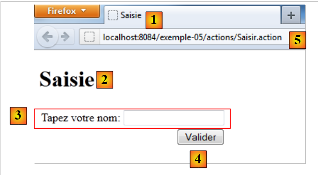

6. المثال 05 – نموذج الإدخال
نقدم مفهوم نموذج الإدخال من خلال مثال بسيط.
6.1. مشروع NetBeans
 |
في ملف [1]، المشروع:
- طرق العرض [Saisie.jsp]، [Confirmation.jsp]
- ملف التكوين [struts.xml]
- ملف الرسائل [messages.properties]
- الإجراء [Confirmer.java]
في [2]، صفحة الإدخال
6.2. Configuration
ملف [struts.xml] هو كما يلي:
<?xml version="1.0" encoding="UTF-8" ?>
<!DOCTYPE struts PUBLIC
"-//Apache Software Foundation//DTD Struts Configuration 2.0//EN"
"http://struts.apache.org/dtds/struts-2.0.dtd">
<struts>
<!-- التدويل -->
<constant name="struts.custom.i18n.resources" value="messages" />
<!-- الحزمة الافتراضية -->
<package name="default" namespace="/" extends="struts-default">
<default-action-ref name="index" />
<action name="index">
<result type="redirectAction">
<param name="actionName">Saisir</param>
<param name="namespace">/actions</param>
</result>
</action>
</package>
<!-- حزمة الإجراءات -->
<package name="actions" namespace="/actions" extends="struts-default">
<action name="Saisir">
<result name="success">/vues/Saisie.jsp</result>
</action>
<action name="Confirmer" class="actions.Confirmer">
<result name="success">/vues/Confirmation.jsp</result>
</action>
</package>
</struts>
- السطر 20: حزمة إجراءات URL /actions/Action.
- الأسطر 21-23: تحدد الإجراء [Saisir]. لا توجد فئة مرتبطة به. الاستجابة هي دائمًا العرض [/vues/Saisie.jsp]
- الأسطر 24-26: تحدد الإجراء [Confirmer]. وترتبط به الفئة [actions.Confirmer]. وتكون الاستجابة دائمًا هي العرض [/vues/Confirmation.jsp]
6.3. الإجراء [Confirmer]
ورمزه هو كما يلي:
package actions;
import com.opensymphony.xwork2.ActionSupport;
public class Confirmer extends ActionSupport{
// القالب
private String nom;
// أدوات الاسترجاع والتعيين
public String getNom() {
return nom;
}
public void setNom(String nom) {
this.nom = nom;
}
}
تحتوي الفئة على حقل واحد فقط، وهو الحقل الموجود في السطر 8 مع طرق get و set الخاصة به.
6.4. ملف الرسائل
محتوى الملف [messages.properties] هو كما يلي:
saisie.texte=Formulaire de saisie
saisie.titre1=Saisie
saisie.titre2=Saisie
saisie.libelle=Tapez votre nom
saisie.valider=Valider
confirm.titre1=Confirmation
confirm.titre2=Confirmation
confirm.texte=Bonjour
confirm.retour=Retour au formulaire de saisie
تُستخدم مفاتيح الرسائل هذه في كل من العرضين [Saisie.jsp] و [Confirmation.jsp].
6.5. طرق العرض
6.5.1. طريقة العرض [Saisie.jsp]
يبدو بصريًا كما يلي:
 |
وإليك شفرة المصدر الخاصة بها:
<%@page contentType="text/html" pageEncoding="UTF-8"%>
<%@ taglib prefix="s" uri="/struts-tags" %>
<!DOCTYPE html>
<html>
<head>
<meta http-equiv="Content-Type" content="text/html; charset=UTF-8">
<title><s:text name="saisie.titre1"/></title>
</head>
<body>
<h1><s:text name="saisie.titre2"/></h1>
<s:form action="Confirmer">
<s:textfield key="saisie.libelle" name="nom"/>
<s:submit key="saisie.valider" action="Confirmer"/>
</s:form>
</body>
</html>
- السطر 7: يعرض رسالة المفتاح saisie.titre1 (الإدخال) [1].
- السطر 10: يعرض رسالة المفتاح saisie.titre2 (الإدخال) [2].
- السطران 11 و14: العلامة <s:form> تُدرج نموذج HTML. سيتم إرسال جميع المدخلات الموجودة داخل هذا النموذج إلى خادم الويب. ويُشار إليها بـ postées، لأن عملية Http التي تدخل في عملية إرسال البيانات هذه إلى الخادم تسمى POST. وتُرسَل البيانات على شكل سلسلة أحرف param1=valeur1¶m2=valeur2&... لقد سبق أن صادفنا هذه السلسلة في الفقرة 3.5 من المثال 02. في كلتا الحالتين، يتم معالجة سلسلة المعلمات بنفس الطريقة بواسطة Struts 2. يتم إدخال قيم valeuri الخاصة بالمعلمات parami في الإجراء المنفذ، في حقول تحمل نفس أسماء المعلمات parami. إلى من تُرسل البيانات المرسلة؟ بشكل افتراضي، إلى الإجراء الذي عرض النموذج، وهو هنا الإجراء Saisir [5]. يمكن أيضًا استخدام السمة action لتحديد إجراء آخر، وهو هنا الإجراء [Confirmer].
- السطر 12: تعرض العلامة <s:textfield ...> حقل الإدخال [3]. ويشير السمة key إلى مفتاح العنوان المراد عرضه على يسار حقل الإدخال. وبالتالي، يتم البحث عن العنوان في الملف [messages.properties]. السمة name هي اسم المعلمة التي سيتم إرسالها. وستكون القيمة المرتبطة بهذه المعلمة هي النص الذي تم إدخاله في حقل الإدخال.
- السطر 13: تعرض العلامة <s:submit ...> الزر [4]. ويشير السمة key إلى مفتاح النص الذي سيظهر على الزر. وبالتالي، يتم البحث عن النص في الملف [messages.properties]. ويؤدي زر من النوع submit إلى إرسال POST من النموذج إلى إجراء ما. وقد ذكرنا سابقًا أن هذا الإجراء هو [Confirmer] بسبب السمة action الخاصة بعلامة <s:form>. تسمح السمة action الخاصة بعلامة <s:submit> بتحديد إجراء آخر إذا لزم الأمر. هنا قمنا بتعيين الإجراء [Confirmer]. يحتوي الزر على اسم معلمة افتراضي: action:nom_action، وهو هنا action:Confirmer. القيمة المرتبطة بهذا المعامل هي نص الزر. في النهاية، ستكون سلسلة المعاملات المرسلة إلى الإجراء [Confirmer] عندما ينقر المستخدم على الزر [Valider] هي:
?nom=xx&action:Confirmer=Valider.
حيث يمثل xx النص الذي أدخله المستخدم في حقل الإدخال.
6.5.2. العرض [Confirmation.jsp]
يبدو بصريًا كما يلي:
 |
ندخل اسمًا ونؤكد صفحة الإدخال. نحصل عندئذٍ على الاستجابة [1]، وهي استجابة العرض [Confirmation.jsp]. عنوان URL المعروض في [2] هو عنوان الإجراء [Confirmer]. في المثال أعلاه، تم إرسال سلسلة الأحرف التالية:
name=bernard&action:Confirmer=Valider
يسمح المعلمة action:Confirmer لـ Struts 2 بتوجيه الطلب إلى الإجراء الصحيح، وهو في هذه الحالة الإجراء [Confirmer]. وبالتالي، سيتم إدخال قيمة المعلمة nom في الحقل nom الخاص بالإجراء [Confirmer].
فيما يلي شفرة المصدر للإجراء [Confirmation.jsp]:
<%@page contentType="text/html" pageEncoding="UTF-8"%>
<%@ taglib prefix="s" uri="/struts-tags" %>
<!DOCTYPE html>
<html>
<head>
<meta http-equiv="Content-Type" content="text/html; charset=UTF-8">
<title><s:text name="confirm.titre1"/></title>
</head>
<body>
<h1><s:text name="confirm.titre2"/></h1>
<s:text name="confirm.texte"/>
<s:property value="nom"/> !
<br/><br/>
<a href="<s:url action="Saisir"/>"><s:text name="confirm.retour"/></a>
</body>
</html>
- السطر 7: يعرض تسمية المفتاح confirm.titre1 الموجودة في ملف الرسائل [1]
- السطر 10: يعرض تسمية المفتاح confirm.titre2 الموجودة في ملف الرسائل [3]
- السطر 12: يعرض الخاصية nom الخاصة بالإجراء [Confirmer] الذي تم تنفيذه.
- السطر 14: ينشئ رابطًا إلى الإجراء [Saisir]. أما العلامة <s:url>, التي سبق ذكرها، فسيتم إنشاؤها انطلاقًا من عنوان URL [2] الخاص بالمتصفح. سيكون المسار هو [2] http://localhost:8084/exemple-05/actions، وستكون الإجراء هي تلك الخاصة بالسمة action، وهي هنا Saisir. وبالتالي، سيكون عنوان URL للرابط هو http://localhost:8084/exemple-05/actions/Saisir.action. وسيكون نص الرابط هو العبارة المرتبطة بالمفتاح confirm.retour [4].
6.6. الاختبارات
فيما يلي طلبان:
 |
في [1]، يتم إدخال اسم ثم الضغط على زر «تأكيد». في [2]، تظهر صفحة التأكيد.
 |
في [3]، نضغط على رابط العودة إلى النموذج. في [4]، تظهر النتيجة. تم شرح كل شيء، باستثناء الانتقال من [3] إلى [4]. لماذا لا نجد في [4] الاسم الذي أدخلناه؟
الرابط في [3] هو رابط إلى عنوان URL [http://localhost:8084/exemple-05/actions/Saisir.action]. وبالتالي، يتم تنفيذ الإجراء [Saisir]. لنلقِ نظرة على تكوينه في [struts.xml]:
<package name="actions" namespace="/actions" extends="struts-default">
<action name="Saisir">
<result name="success">/vues/Saisie.jsp</result>
</action>
<action name="Confirmer" class="actions.Confirmer">
<result name="success">/vues/Confirmation.jsp</result>
</action>
</package>
الإجراء [Saisir] غير مرتبط بأي إجراء. لذا يتم عرض طريقة العرض [Saisie.jsp] على الفور. لنلقِ نظرة على كود طريقة العرض هذه:
<%@page contentType="text/html" pageEncoding="UTF-8"%>
<%@ taglib prefix="s" uri="/struts-tags" %>
<!DOCTYPE html>
<html>
<head>
<meta http-equiv="Content-Type" content="text/html; charset=UTF-8">
<title><s:text name="saisie.titre1"/></title>
</head>
<body>
<h1><s:text name="saisie.titre2"/></h1>
<s:form>
<s:textfield key="saisie.libelle" name="nom"/>
<s:submit key="saisie.valider" action="Confirmer"/>
</s:form>
</body>
</html>
في السطر 12، يتم عرض حقل الإدخال. يتم تهيئة محتواه باستخدام الخاصية nom (name). دعونا نستذكر ما تمت كتابته أعلاه حول طريقة عمل العلامة <s:property>:
تسمح العلامة <s:property name="الخاصية"> بكتابة قيمة خاصية كائن يُسمى ActionContext. ويوجد في هذا الكائن:
- خصائص الفئة المرتبطة بالإجراء الذي تم تنفيذه.
- سمات الطلب الحالي المشار إليها بـ <s:property name="#request['clé']">
- سمات جلسة عمل المستخدم المشار إليها بـ <s:property name="#session['clé']">
- سمات التطبيق نفسه المشار إليها بـ <s:property name="#application['clé']">
- المعلمات المرسلة من متصفح العميل والمشار إليها بـ <s:property name="#parameters['clé']">
- يُظهر الترميز <s:property name="#attr['clé']"> قيمة كائن يتم البحث عنه في الصفحة، ثم الاستعلام، ثم الجلسة، ثم التطبيق، بهذا الترتيب.
نحن هنا في الحالة 1. لا توجد فئة مرتبطة بالإجراء [Saisir]. وبالتالي، فإن الخاصية nom غير موجودة. وعندئذٍ يتم عرض سلسلة فارغة في حقل الإدخال.
لعرض الاسم الذي تم إدخاله في [1] في [4]، سنستخدم جلسة عمل المستخدم.